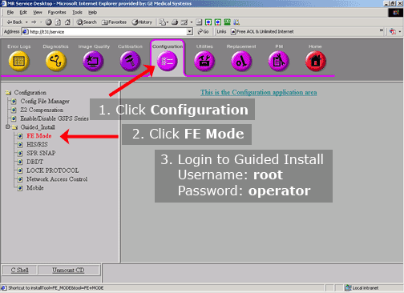
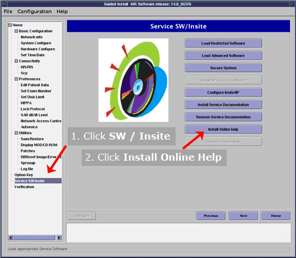

Operating Documentation
Direction 5670006, Rev# 1
Discovery MR750w GEM Service Methods
Module Version 3.0, Version Date 8/20/08
Operating Documentation |
| Required Persons | Preliminary Reqs | Procedure | Finalization |
|---|---|---|---|
| 1 | Not Applicable | 2 mins | Not Applicable |
Beginning with the HDx program (14x software), all operator manuals were distributed electronically instead of via paper manuals. These instructions describe how to load the operator manuals onto the system’s host computer so customers can have access to the manuals any time they are using the system.
| Item | Qty | Effectivity | Part# | Manufacturer | |
|---|---|---|---|---|---|
| DVD Media for Operator Manual | 1 | - | (See FRU manual) | - | |
Launch Guided Install. Login id is root and password is operator (see Illustration 1).
Illustration 1: Launching Guided Install

In the content window on the left side, select Service SW/Insite (see Illustration 2).
Illustration 2: Window: Guided Install

Click the [Install Online Help] button (see Illustration 2).
When prompted to “insert the media containing online documentation” insert the DVD Media for Operator Manual into the host computer's DVD-ROM drive and then click [OK] (seeIllustration 3).
| NOTE: | The DVD Media for Operator Manual is available in multiple languages. Verify that your DVD is in the local language. |
Illustration 3: Message: Requesting Media
Once the installation is complete, a message will appear indicating that the installation was successful. Click [OK] (see Illustration 4) and remove the DVD from the DVD-ROM drive.
Illustration 4: Message: Successful Install
Verify if the Online Help opens up. To verify this, click the book icon on the lower right corner of the LCD Monitor and view the documents.
No finalization steps.